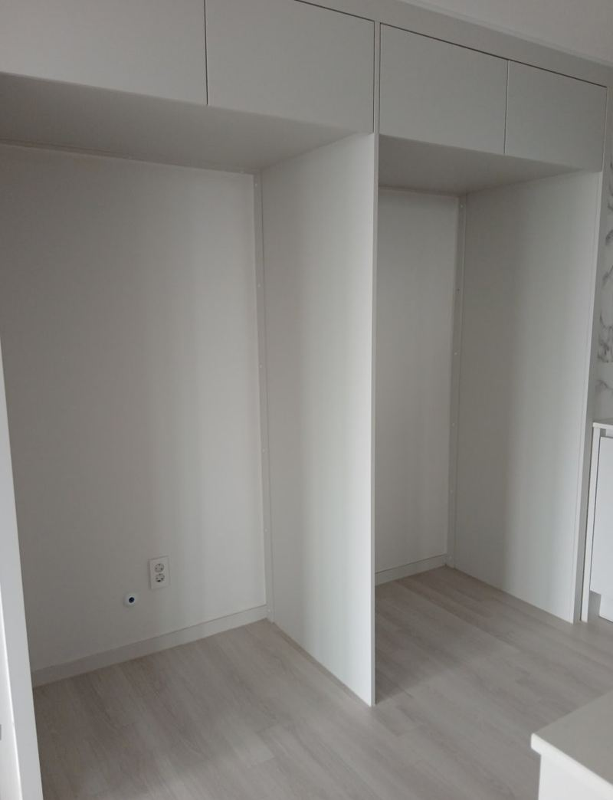
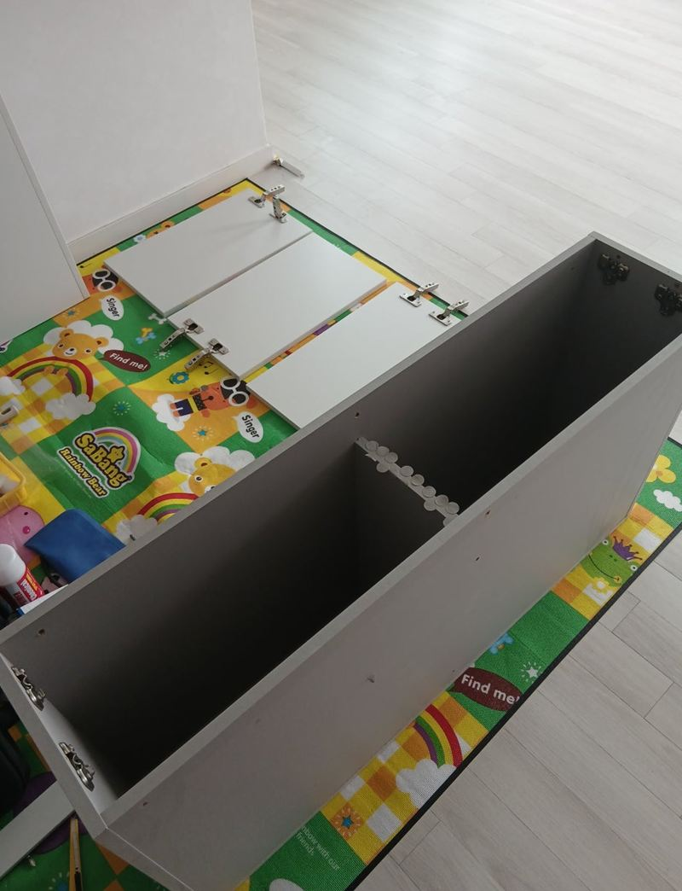
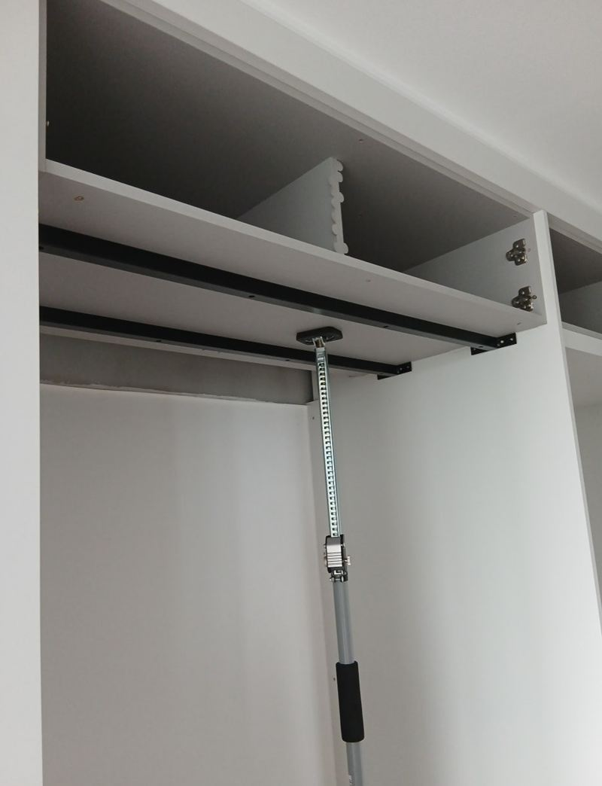
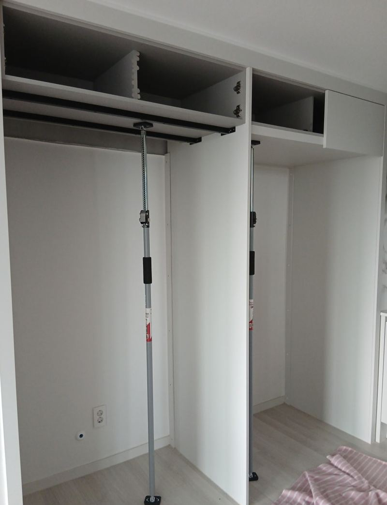
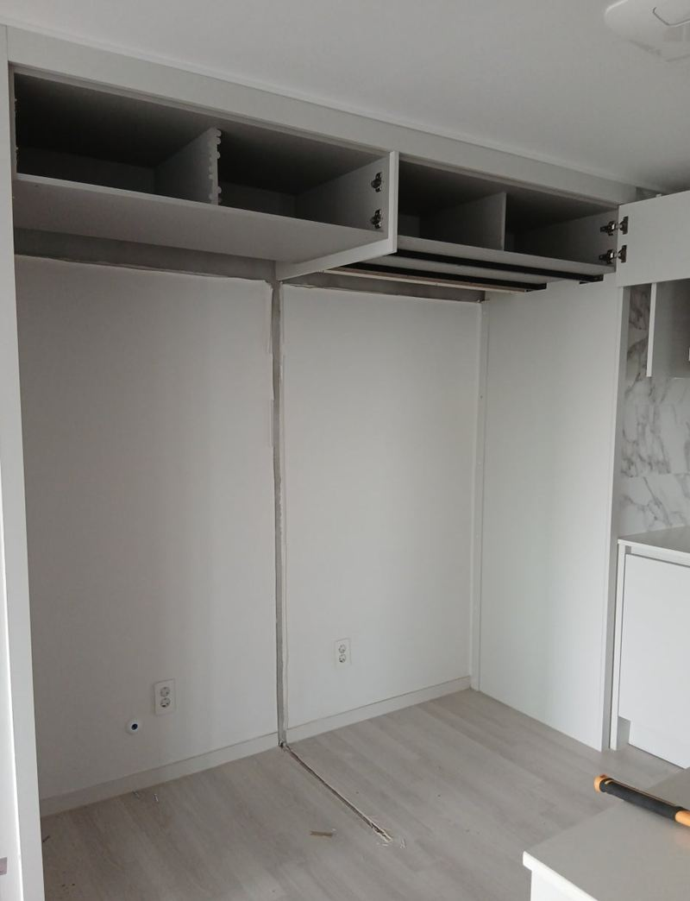
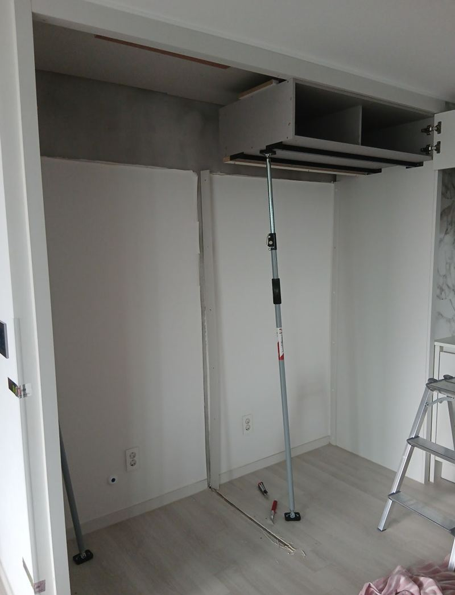

성동 냉장고장 기둥 자르기 리폼 방법
← 밀어서 전후 비교 →
"냉장고가 커서 지금 구조로는 안 들어가요. 가운데 기둥을 없앨 수 있을까요?" 성동구 용답동 아파트 입주 준비 중이던 고객분이었어요. 냉장고장이 가운데 기둥으로 두 칸으로 나뉘어 있어, 새로 산 큰 냉장고를 넣을 수 없었어요. 상부장이 어떻게 지탱되는지 먼저 확인하고, 기둥을 상부장 높이에 맞춰 잘라 낸 뒤 천장 목대와 연결해 한 칸으로 넓혔어요.
| 현장 | 서울 성동구 용답동 아파트, 입주 전 주방 |
|---|---|
| 요청 | 큰 냉장고가 들어가도록 냉장고장 가운데 기둥 제거 |
| 한 일 | 벽체·상부장 지지 상태 점검 → 상부장 분해 → 기둥 절단·리폼 → 천장 목대 연결 확인 → 마감 → 폐자재 수거 |
| 보강 | 기존 상부장 보강이 잘 되어 있어 추가 보강 없이 진행 |
가운데 기둥, 잘라도 될까?
냉장고장 가운데 기둥은 칸을 나누는 역할만 하는 게 아니라 위쪽 상부장 무게를 일부 받치고 있을 수 있어요. 그냥 잘라 내면 상부장이 흔들리거나, 시간이 지나며 가운데가 처져요. 그래서 자르기 전에 상부장이 벽체와 천장에 어떻게 붙어 있는지, 기둥 속에 전선이나 배관이 지나가지 않는지 먼저 봤어요.


기둥 리폼 순서
상부장 분해
냉장고 위 상부장을 분해해 기둥 윗부분이 드러나게 했어요. 숨은 전선이나 배관이 있는지도 이때 확인했어요.
받치고 자르기
작업하는 동안 상부장이 내려앉지 않게 지지대를 세워 받친 뒤, 기둥을 상부장 높이에 맞춰 잘라 냈어요.


천장 목대 연결 확인
상부장이 천장 목대에 단단히 물려 있는지 확인하고 연결했어요.

마감과 정리
잘린 자리를 깔끔하게 마감하고, 떼어 낸 자재를 수거했어요.

상부장 처짐, 이렇게 막아요
기둥 리폼에서 가장 중요한 건 무게를 어디로 보낼지예요. 기둥이 없어지면 상부장은 벽과 천장에만 기대야 해요. 이 집은 원래 상부장 보강이 잘 되어 있어 천장 목대와 연결만으로 충분했어요. 보강이 약한 집이라면 목대를 새로 대거나 벽 고정을 더해야 해요.
마감도 대충 하면 안 돼요. 잘린 선이 지저분하면 냉장고와 장 사이 틈에 먼지가 쌓이고 보기에도 허전해요. 고객분은 "기둥만 자르면 허전하고 불안할 줄 알았는데 보강까지 신경 써서 안정적이다, 냉장고도 문제없이 들어간다"고 하셨어요.
리폼 전에 알아 두면 좋은 것
- 냉장고 치수폭·높이·깊이와 문 여는 공간까지 재 두세요.
- 입주 전 작업짐이 들어오기 전에 하면 훨씬 수월해요.
- 콘센트 위치기둥을 없애면 콘센트가 냉장고 뒤로 숨는지 확인해요.
기둥 대신 할 수 있는 다른 방법
- 옆 장 폭 줄이기가운데 기둥은 두고 옆 수납장 폭을 줄여 냉장고 자리를 넓히는 방법도 있어요.
- 상부장 높이 올리기냉장고 키가 문제라면 상부장을 위로 올리는 리폼을 해요.
- 냉장고장 전체 다시 짜기구조를 크게 바꾸고 싶다면 새로 짜는 게 깔끔할 때도 있어요.
냉장고장 기둥 리폼 질문
상부장까지 다 없앨 수도 있나요?
가능해요. 다만 천장 쪽 마감을 따로 해야 해서 범위가 커져요.
기둥 속에 전선이 있으면요?
전선 경로를 옮기거나 정리한 뒤 잘라요. 작업 전에 확인하는 이유예요.
냉장고장 폭을 반대로 줄일 수도 있나요?
판을 덧대 폭을 줄이는 리폼도 해요.
4도어 냉장고도 들어갈까요?
기둥을 없앤 뒤 폭이 냉장고보다 넉넉한지 재 봐야 해요. 양옆 여유가 조금 있어야 해요.
잘린 자리는 어떻게 마감하나요?
몰딩이나 마감재로 덮고 틈은 실리콘으로 막아요.
오래된 아파트도 되나요?
상부장 고정 상태를 보고 보강을 더해서 진행해요.
작업하면 먼지가 많이 나나요?
자르는 동안 먼지가 나서 주변을 덮고 작업한 뒤 치워요.
냉장고장 문짝도 바꿀 수 있나요?
칸이 넓어지면 문짝도 새 폭에 맞춰 만들어 달 수 있어요.
다른 냉장고장 현장
냉장고장 정면과 넣을 냉장고 크기를 알려주세요.
전화 상담 010-4517-9872